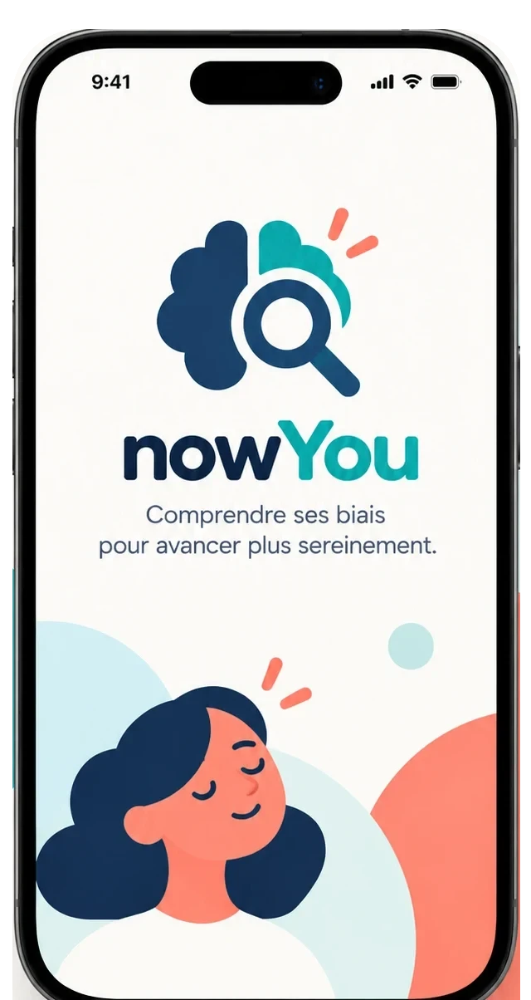
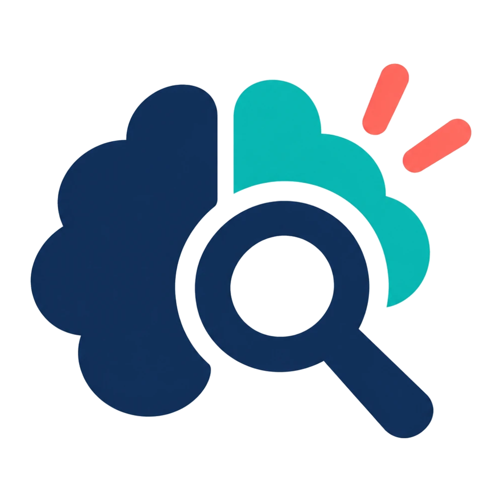
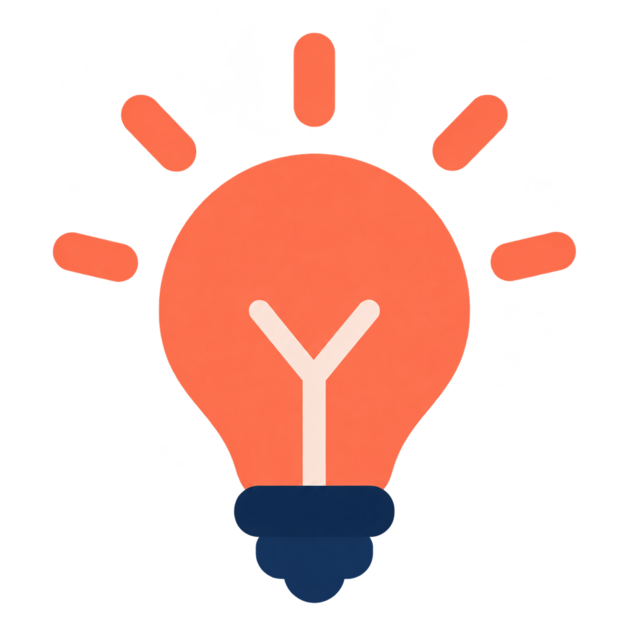
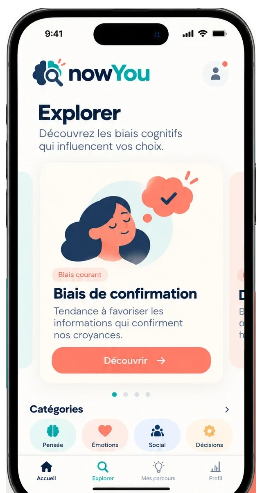
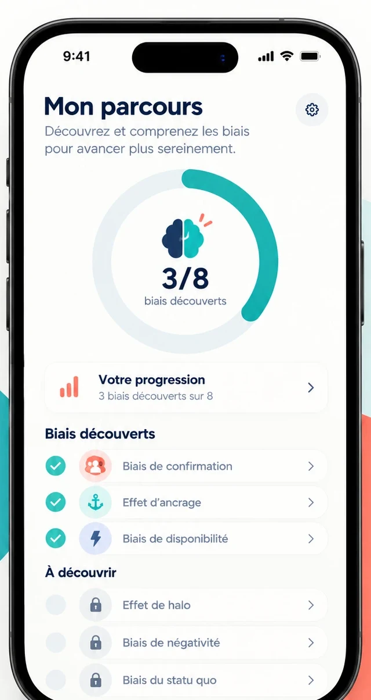

Mieux se connaître
Prendre du recul sur ses pensées et repérer les raccourcis qui décident à notre place.
Application mobile · biais cognitifs
nowYou vous aide à identifier et comprendre les biais cognitifs pour mieux vous connaître et faire des choix plus éclairés au quotidien.

Une fiche d’une minute, trois questions, et votre parcours progresse. Sans jargon, sans pavé.
Prendre du recul sur ses pensées et repérer les raccourcis qui décident à notre place.

Découvrir les biais qui influencent nos choix, classés par thème, avec un exemple du quotidien.

Des connaissances pour agir au quotidien : comment le cerveau simplifie, et cinq réflexes pour déceler un biais.
Identifiez les raccourcis mentaux qui influencent vos décisions. Recherchez par nom ou par thème, filtrez par catégorie.

Avancez pas à pas : lisez une fiche, répondez à trois questions, et le biais rejoint votre parcours.

Pas de cours magistral : un rythme court, pensé pour tenir dans une pause.
Une minute suffit : le mécanisme, un exemple, trois signaux pour le repérer.
Un bouton par réponse, une explication à chaque fois.
Le biais rejoint vos découvertes. Revenez le réviser quand vous voulez.
Toutes les fiches de l’application sont aussi lisibles ici, gratuitement.
 Pensée
Raisonnement, mémoire, attention
18 biais
Pensée
Raisonnement, mémoire, attention
18 biais
 Émotions
Ressenti, humeur, anticipation
16 biais
Émotions
Ressenti, humeur, anticipation
16 biais
 Social
Les autres, le groupe, l’image de soi
18 biais
Social
Les autres, le groupe, l’image de soi
18 biais
 Décisions
Choix, argent, risque
18 biais
Décisions
Choix, argent, risque
18 biais
nowYou ne demande pas de compte et n’envoie aucune requête. Votre progression est enregistrée sur votre téléphone, et nulle part ailleurs.
Lire la politique de confidentialitéComprendre les biais cognitifs pour faire des choix plus clairs au quotidien.